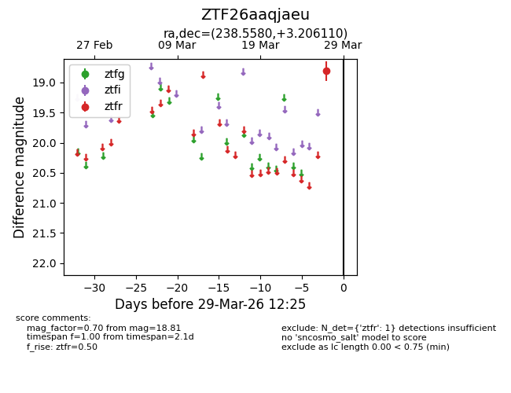
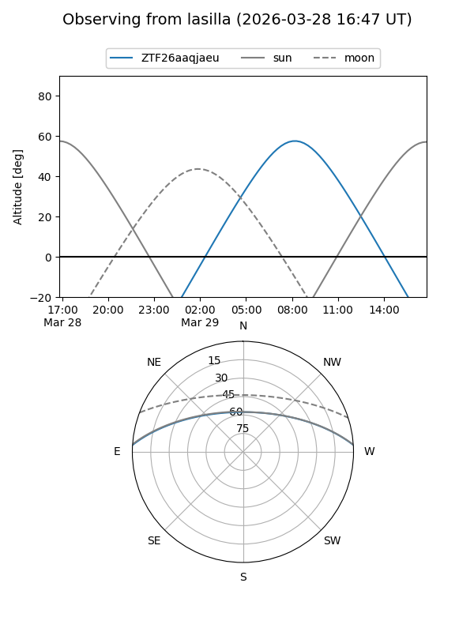
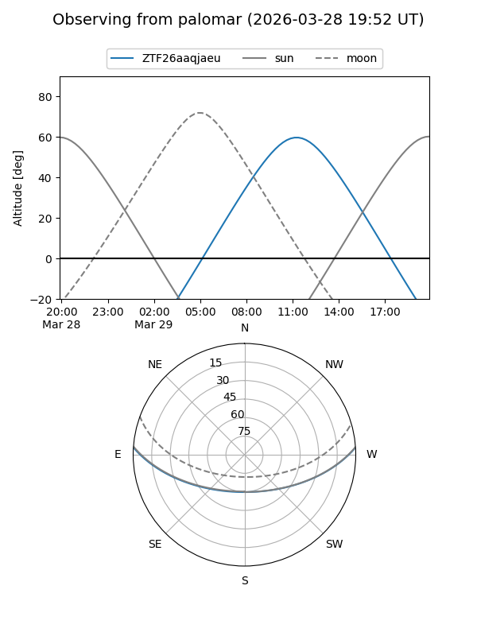

ZTF26aaqjaeu
Target ZTF26aaqjaeu at 2026-03-29 12:28
Aliases and brokers:
FINK: link
Lasair: link
ALeRCE: link
alt names
ZTF26aaqjaeu (ztf,fink_ztf)
Coordinates:
equatorial (ra, dec) = 238.5580,+3.20611
equatorial (HMS+DMS) = 15:54:13.93,+03:12:22.00
galactic (l, b) = (12.3588,+40.25021)
Flags:
Photometry:
last ztfr=18.81
1 ztfr detections
Lightcurve

Visibility


Additional plots